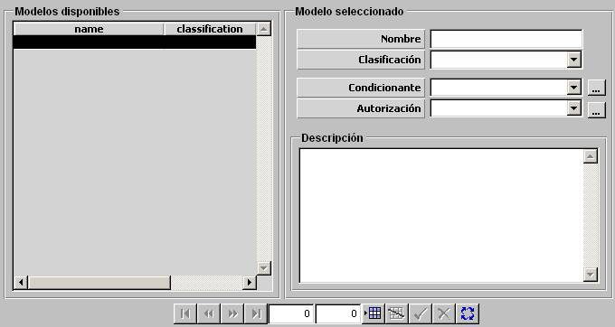

ROE

Mediante esta tabla se parametrizan las ROE disponibles. La implementación de una ROE se define mediante una “frase” del tipo:
Si Condición ROE entonces Autorización ROE
Por tanto, una ROE se especifica seleccionando un Condicionante ROE y una Autorización ROE:
Condicionante: Podrá ser seleccionado de entre los Condicionantes ROE definidos. Mediante el botón de etiqueta “...” se abre el diálogo para definir estos condicionantes. Ver apartado Preparación – Modelos Básicos – ROEs – Condicionantes ROE.
Si la ROE no tiene condicionante, será una autorización o prohibición absoluta, que aplica durante todo el tiempo en que la ROE esté activa.
Autorización: Podrá ser seleccionado de entre las Autorizaciones ROE definidas. Mediante el botón de etiqueta “...” se abre el diálogo para definir estos autorizaciones. Ver apartado Preparación – Modelos Básicos – ROEs – Autorizaciones ROE.
Descripción: Campo de texto libre para incluir una descripción breve de la ROE.